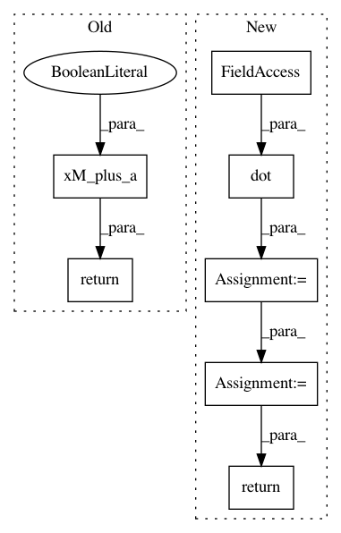

00fcfa0df6d8f73e5041e4a989cd9ee74e89466e,paysage/models/hidden.py,HopfieldModel,_visible_field,#HopfieldModel#Any#Any#,233
Before Change
def _visible_field(self, hidden, beta=1):
W = beta * self.params["weights"]
return B.xM_plus_a(hidden, W, self.params["visible_bias"], trans=True)
def sample_hidden(self, visible, beta=1):
return self.layers["hidden"].sample_state(self._hidden_loc(visible, beta), self.hidden_scale)
After Change
return result
def _visible_field(self, hidden, beta=1):
result = B.dot(hidden, self.params["weights"].T)
result *= beta
result += self.params["visible_bias"]
return result
def sample_hidden(self, visible, beta=1):
return self.layers["hidden"].sample_state(self._hidden_loc(visible, beta), self.hidden_scale)
In pattern: SUPERPATTERN
Frequency: 3
Non-data size: 7
Instances
Project Name: drckf/paysage
Commit Name: 00fcfa0df6d8f73e5041e4a989cd9ee74e89466e
Time: 2017-01-04
Author: charlesfisher@Charless-MacBook-Pro.local
File Name: paysage/models/hidden.py
Class Name: HopfieldModel
Method Name: _visible_field
Project Name: drckf/paysage
Commit Name: 00fcfa0df6d8f73e5041e4a989cd9ee74e89466e
Time: 2017-01-04
Author: charlesfisher@Charless-MacBook-Pro.local
File Name: paysage/models/hidden.py
Class Name: RestrictedBoltzmannMachine
Method Name: _visible_field
Project Name: drckf/paysage
Commit Name: 00fcfa0df6d8f73e5041e4a989cd9ee74e89466e
Time: 2017-01-04
Author: charlesfisher@Charless-MacBook-Pro.local
File Name: paysage/models/hidden.py
Class Name: GaussianRestrictedBoltzmannMachine
Method Name: _visible_loc